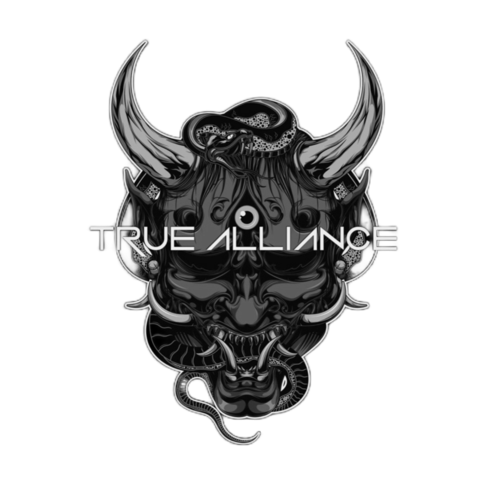
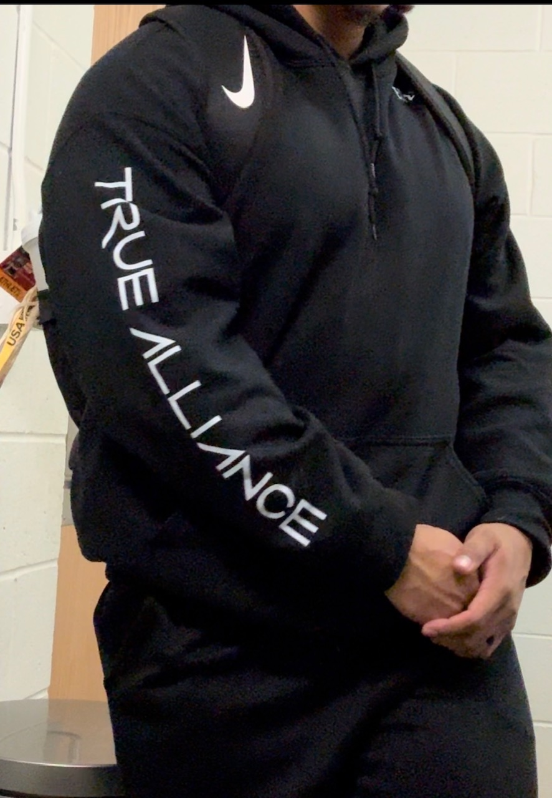
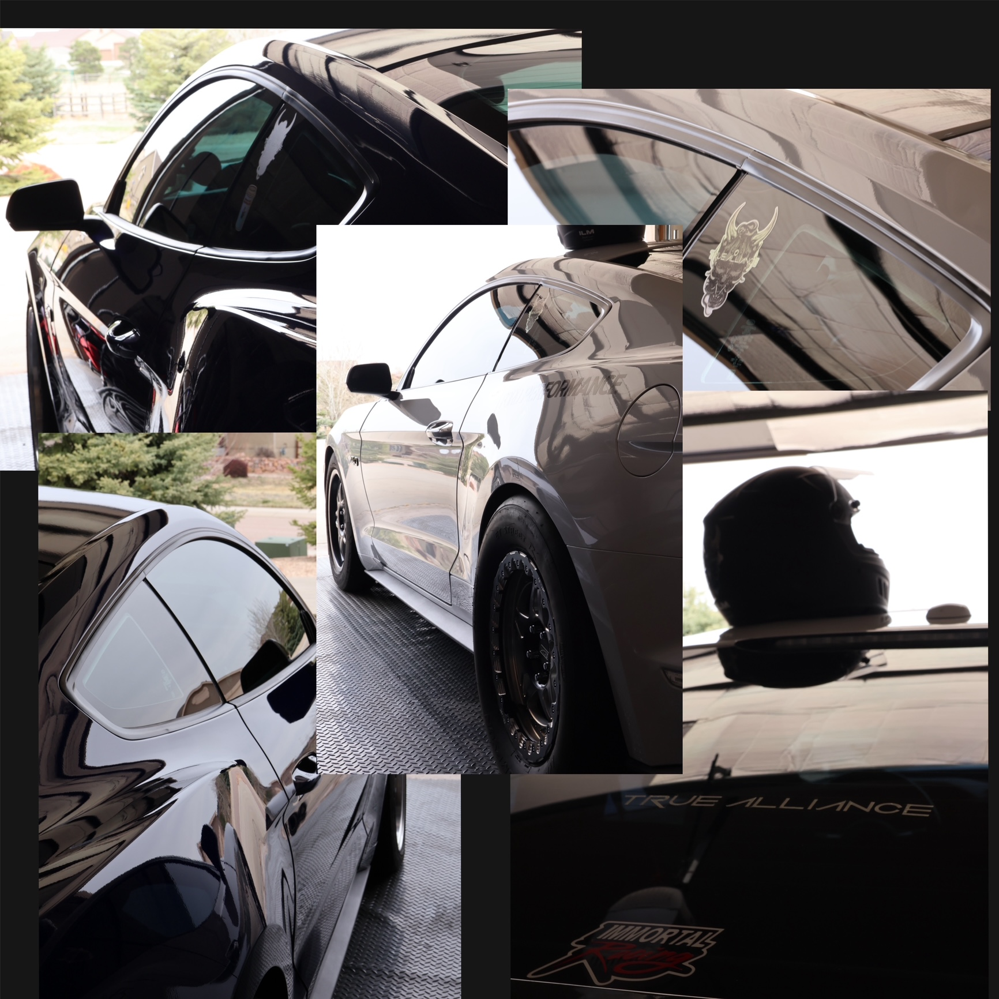

Portfolio
Selected Work
This portfolio highlights branding, publication design, digital media, photography, apparel concepts, and visual identity work developed through both academic and personal creative projects.

True Alliance Branding
Brand identity work focused on event promotion, automotive culture, community, and visual storytelling.
Digital Wallpaper
A wallpaper design using typography, atmosphere, limited color palettes, and visual hierarchy.

Parley Submission
A publication concept developed for the PPSC Literary and Arts Journal using dark cinematic tones.

Clothing Concepts
Apparel concepts developed from digital layouts into wearable visual branding pieces.

Photography to Digital Design
Photography integrated into digital compositions focused on motion, layering, contrast, and identity.

Logo Creation
Logo studies exploring hierarchy, symbolism, typography, texture, and brand direction.